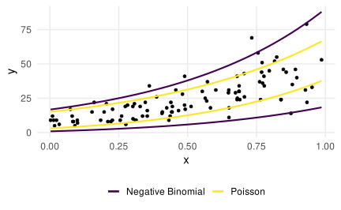

| id | studyh | solved |
|---|---|---|
| 1 | 14 | 15 |
| 2 | 11 | 13 |
| 3 | 91 | 60 |
| 4 | 55 | 36 |
| ... | ... | ... |
| 97 | 49 | 30 |
| 98 | 3 | 6 |
| 99 | 52 | 28 |
| 100 | 90 | 68 |
Poisson GLM
Psychological Sciences
Filippo Gambarota
University of Padova
Last modified: 26-01-2025
Poisson GLM
Everything that we discussed for the binomial GLM is also relevant for the Poisson GLM. We are gonna focus on specificity of the Poisson model in particular:
- Poisson distribution and link function
- Parameters interpretation
- Overdispersion causes, consequences and remedies
Poisson distribution
Poisson distribution
The Poisson distribution is defined as:
\[ p(y; \lambda) = \frac{\lambda^y e^{-\lambda}}{y!} \] Where the mean is \(\lambda\) and the variance is \(\lambda\)
Poisson distribution
Poisson distribution
As the mean increases also the variance increase and the distributions is approximately normal:
Poisson distribution
Link function
The common (and default in R) link function (\(g(\lambda)\)) for the Poisson distribution is the log link function and the inverse of link function is the exponential.
\[\begin{align*} log(\lambda_i) = \beta_0 + \beta_1x_{i1} + \beta_2x_{i2} + \cdots + \beta_px_{ip} \\ \lambda_i = e^{\beta_0 + \beta_1x_{i1} + \beta_2x_{i2} + \cdots + \beta_px_{ip}} \end{align*}\]
Parameters intepretation
An example…
Let’s start by a simple example trying to explain the number of errors of math exercises by students (N = 100) as a function of the number of hours of study.
An example…
- There is a clear non-linear and positive relationship
- The both the mean and variance increase as a function of the predictor
Model fitting
We can fit the model using the glm function in R setting the appropriate random component (family) and the link function (link):
#>
#> Call:
#> glm(formula = solved ~ studyh, family = poisson(link = "log"),
#> data = dat)
#>
#> Coefficients:
#> Estimate Std. Error z value Pr(>|z|)
#> (Intercept) 2.29825 0.04603 49.92 <2e-16 ***
#> studyh 0.02066 0.00065 31.78 <2e-16 ***
#> ---
#> Signif. codes: 0 '***' 0.001 '**' 0.01 '*' 0.05 '.' 0.1 ' ' 1
#>
#> (Dispersion parameter for poisson family taken to be 1)
#>
#> Null deviance: 1226.469 on 99 degrees of freedom
#> Residual deviance: 95.636 on 98 degrees of freedom
#> AIC: 610.72
#>
#> Number of Fisher Scoring iterations: 4Parameters intepretation
- The
(Intercept)\(2.298\) is the log of the expected number of solved exercises for a student with 0 hours of studying. Taking the exponential we obtain the estimation on the response scale \(9.957\) - the
studyh\(0.021\) is the increase in the expected increase of (log) solved exercises for a unit increase in hours of studying. Taking the exponential we obtain the ratio of increase of the number of solved exercises \(1.021\)
Parameters intepretation
Again, as in the binomial model, the effects are linear on the log scale but non-linear on the response scale.
Parameters intepretation
The non-linearity can be easily seen using the predict() function:
linear <- predict(fit, newdata = data.frame(studyh = c(10, 11)))
diff(linear) # same as the beta0#> 2
#> 0.02065628#> 2
#> 0.2554891# ratio of increase when using the response scale
nonlinear[2]/nonlinear[1]#> 2
#> 1.020871#> studyh
#> 1.020871Parameters intepretation - Categorical variable
Let’s make a similar example with the number of solved exercises comparing students who attended online classes and students attending in person. The class_c is the dummy version of class (0 = online, 1 = inperson).
| id | class | class_c | solved |
|---|---|---|---|
| 1 | online | 0 | 8 |
| 2 | inperson | 1 | 12 |
| 3 | online | 0 | 10 |
| 4 | inperson | 1 | 10 |
| ... | ... | ... | ... |
| 97 | online | 0 | 15 |
| 98 | inperson | 1 | 11 |
| 99 | online | 0 | 9 |
| 100 | inperson | 1 | 17 |
Parameters intepretation - Categorical variable
Parameters intepretation - Categorical variable
R by default set the categorical variables using dummy-coding. In this case we set the reference category to online.
#>
#> Call:
#> glm(formula = solved ~ class, family = poisson(link = "log"),
#> data = dat)
#>
#> Coefficients:
#> Estimate Std. Error z value Pr(>|z|)
#> (Intercept) 2.26592 0.04555 49.747 < 2e-16 ***
#> classinperson 0.39574 0.05892 6.717 1.86e-11 ***
#> ---
#> Signif. codes: 0 '***' 0.001 '**' 0.01 '*' 0.05 '.' 0.1 ' ' 1
#>
#> (Dispersion parameter for poisson family taken to be 1)
#>
#> Null deviance: 140.610 on 99 degrees of freedom
#> Residual deviance: 94.609 on 98 degrees of freedom
#> AIC: 525.84
#>
#> Number of Fisher Scoring iterations: 4Parameters intepretation - Categorical variable
- Similarly to the previous example, the intercept is the expected number of solved exercises when the
classis 0. Thus the expected number of solved exercises for online students. - the
classinpersonis the difference in log solved exercises between online and in person classes. In the response scale is the expected increase in the ratio of solved exercises. People doing in person classes solve 148.55% of the exercises of people doing online classes
Overdispersion
Overdispersion
Overdispersion concerns observing a greater variance compared to what would have been expected by the model.
The overdispersion \(\phi\) can be estimated using Pearson Residuals:
\[\begin{align*} \hat \phi = \frac{\sum_{i = 1}^n \frac{(y_i - \hat y_i)^2}{\hat y_i}}{n - p - 1} \end{align*}\]
Where the numerator is the sum of squared Pearson residuals, \(n\) is the number of observations and \(k\) the number of predictors. For standard Binomial and Poisson models \(\phi = 1\).
Overdispersion
If the model is correctly specified for binomial and poisson models the ratio is equal to 1, of the ratio is \(> 1\) there is evidence for overdispersion. In practical terms, if the residual deviance is higher than the residuals degrees of freedom, there is evidence for overdispersion.
P <- sum(residuals(fit, type = "pearson")^2)
P / df.residual(fit) # nrow(fit$dat) - length(fit_p$coefficients)#> [1] 0.9465021Testing overdispersion
To formally test for overdispersion i.e. testing if the ratio is significantly different from 1 we can use the performance::check_overdispersion() function.
performance::check_overdispersion(fit)#> # Overdispersion test
#>
#> dispersion ratio = 0.947
#> Pearson's Chi-Squared = 92.757
#> p-value = 0.631Overdispersion plot
Pearson residuals are defined as:
\[\begin{align*} r_p = \frac{y_i - \hat y_i}{\sqrt{V(\hat y_i)}} \\ V(\hat y_i) = \sqrt{\hat y_i} \end{align*}\]
Remember that the mean and the variance are the same in Poisson models. If the model is correct, the standardized residuals should be normally distributed with mean 0 and variance 1.
Overdispersion plot
Variance-mean relationship
The overdispersion can be expressed also in terms of variance-mean ratio. In fact, when the ratio is 1, there is no evidence of overdispersion.
Causes of overdispersion
There could be multiple causes for overdispersion:
- the phenomenon itself cannot be modelled with a Poisson distribution
- outliers or anomalous obervations that increases the observed variance
- missing important variables in the model
Outliers or anomalous data
This (simulated) dataset contains \(n = 30\) observations coming from a poisson model in the form \(y = 1 + 2x\) and \(n = 7\) observations coming from a model \(y = 1 + 10x\).

Outliers or anomalous data
Clearly the sum of squared pearson residuals is inflated by these values producing more variance compared to what should be expected.
#> mean var
#> 2.756757 6.689189performance::check_overdispersion(fit)#> # Overdispersion test
#>
#> dispersion ratio = 1.515
#> Pearson's Chi-Squared = 53.019
#> p-value = 0.026Missing important variables in the model
Let’s imagine to analyze again the dataset with the number of solved exercises. We have the effect of the studyh variable. In addition we have the effect of the class variable, without interaction.
| id | class | studyh | class_c | lp | solved |
|---|---|---|---|---|---|
| 1 | online | 82 | 0 | 22.613 | 24 |
| 2 | inperson | 65 | 1 | 47.734 | 50 |
| 3 | online | 12 | 0 | 11.268 | 15 |
| 4 | inperson | 54 | 1 | 42.785 | 50 |
| ... | ... | ... | ... | ... | ... |
| 37 | online | 85 | 0 | 23.298 | 35 |
| 38 | inperson | 55 | 1 | 43.213 | 43 |
| 39 | online | 80 | 0 | 22.167 | 26 |
| 40 | inperson | 77 | 1 | 53.788 | 54 |
Missing important variables in the model
We can also have a look at the data:
Missing important variables in the model
Now let’s fit the model considering only studyh and ignoring the group:
#>
#> Call:
#> glm(formula = solved ~ studyh, family = poisson(link = "log"),
#> data = dat)
#>
#> Coefficients:
#> Estimate Std. Error z value Pr(>|z|)
#> (Intercept) 2.692791 0.068831 39.12 <2e-16 ***
#> studyh 0.013624 0.001063 12.82 <2e-16 ***
#> ---
#> Signif. codes: 0 '***' 0.001 '**' 0.01 '*' 0.05 '.' 0.1 ' ' 1
#>
#> (Dispersion parameter for poisson family taken to be 1)
#>
#> Null deviance: 417.99 on 39 degrees of freedom
#> Residual deviance: 243.99 on 38 degrees of freedom
#> AIC: 451.39
#>
#> Number of Fisher Scoring iterations: 4Missing important variables in the model
Essentially, we are fitting an average relationship across groups but the model ignore that the two groups differs, thus the observed variance is definitely higher because we need two separate means to explain the class effect.
Missing important variables in the model
By fitting the appropriate model, the overdispersion is no longer a problem:
#>
#> Call:
#> glm(formula = solved ~ studyh + class, family = poisson(link = "log"),
#> data = dat)
#>
#> Coefficients:
#> Estimate Std. Error z value Pr(>|z|)
#> (Intercept) 2.275159 0.078239 29.08 <2e-16 ***
#> studyh 0.010895 0.001068 10.21 <2e-16 ***
#> classinperson 0.907365 0.065373 13.88 <2e-16 ***
#> ---
#> Signif. codes: 0 '***' 0.001 '**' 0.01 '*' 0.05 '.' 0.1 ' ' 1
#>
#> (Dispersion parameter for poisson family taken to be 1)
#>
#> Null deviance: 417.993 on 39 degrees of freedom
#> Residual deviance: 29.022 on 37 degrees of freedom
#> AIC: 238.41
#>
#> Number of Fisher Scoring iterations: 4Missing important variables in the model
performance::check_overdispersion(fit)#> # Overdispersion test
#>
#> dispersion ratio = 6.115
#> Pearson's Chi-Squared = 232.369
#> p-value = < 0.001performance::check_overdispersion(fit2)#> # Overdispersion test
#>
#> dispersion ratio = 0.777
#> Pearson's Chi-Squared = 28.738
#> p-value = 0.832Missing important variables in the model
Also the residuals plots clearly improved after including all relevant predictors:
Why worring about overdispersion?
Before analyzing the two main strategies to deal with overdispersion, it is important to understand why it is very problematic.
- Despite the estimated parameters (\(\beta\)) are not affected by overdispersion, standard errors are underestimated. The underestimation increases as the severity of the overdispersion increases.
- Underestimated standard errors produces (biased) higher \(z\) scores inflating the type-1 error (i.e., lower p values)
Why worring about overdispersion?
The estimated overdispersion of fit is ~ 6.4208936. The summary() function in R has a dispersion argument to check how model parameters are affected.
phi <- fit$deviance / fit$df.residual
summary(fit, dispersion = 1)$coefficients # the default#> Estimate Std. Error z value Pr(>|z|)
#> (Intercept) 2.69279058 0.068830558 39.12202 0.000000e+00
#> studyh 0.01362422 0.001062724 12.82009 1.265575e-37summary(fit, dispersion = 2)$coefficients # assuming phi = 2#> Estimate Std. Error z value Pr(>|z|)
#> (Intercept) 2.69279058 0.097341109 27.663447 1.923115e-168
#> studyh 0.01362422 0.001502919 9.065171 1.244091e-19summary(fit, dispersion = phi)$coefficients # the appropriate#> Estimate Std. Error z value Pr(>|z|)
#> (Intercept) 2.69279058 0.174413070 15.439156 8.926080e-54
#> studyh 0.01362422 0.002692888 5.059333 4.207258e-07Why worring about overdispersion?
By using multiple values for \(\phi\) we can see the impact on the standard error. \(\phi = 1\) is what is assumed by the Poisson model.
Dealing with overdispersion
Dealing with overdispersion
If all the variables are included and there are no outliers, the phenomenon itself contains more variability compared to what predicted by the Poisson. There are two main approaches to deal with the situation:
- quasi-poisson model
- poisson-gamma model AKA negative-binomial model
- multilevel poisson model
Quasi-poisson model
The quasi-poisson model is essentially a poisson model that estimate the \(\phi\) parameter and adjust the standard errors accordingly. Again, assuming to fit the studyh only model (with overdispersion):
fit <- glm(solved ~ studyh, data = dat, family = quasipoisson(link = "log"))
summary(fit)#>
#> Call:
#> glm(formula = solved ~ studyh, family = quasipoisson(link = "log"),
#> data = dat)
#>
#> Coefficients:
#> Estimate Std. Error t value Pr(>|t|)
#> (Intercept) 2.692791 0.170209 15.821 < 2e-16 ***
#> studyh 0.013624 0.002628 5.184 7.46e-06 ***
#> ---
#> Signif. codes: 0 '***' 0.001 '**' 0.01 '*' 0.05 '.' 0.1 ' ' 1
#>
#> (Dispersion parameter for quasipoisson family taken to be 6.115055)
#>
#> Null deviance: 417.99 on 39 degrees of freedom
#> Residual deviance: 243.99 on 38 degrees of freedom
#> AIC: NA
#>
#> Number of Fisher Scoring iterations: 4Quasi-poisson model
The quasi-poisson model estimates the same parameters (\(\beta\)) and adjust standard errors. Notice that using summary(dispersion = ) is the same as fitting a quasi-Poisson model and using the estimated \(\phi\).
The quasi-poisson model is useful because it is a very simple way to deal with overdispersion.
The variance (\(V(\mu)\)) of the Poisson model is no longer \(\mu\) but \(V(\mu) = \mu\phi\). When \(\phi\) is close to 1, the quasi-Poisson model reduced to a standard Poisson model
Quasi-poisson model
Here we compare the expected variance (\(\pm 2\sqrt{V(y_i)}\))1 of the Quasi-Poisson and Poisson models:
Problems of Quasi-* model
The main problem of quasi-* models is that they are not a specific distribution family and there is not a likelihood function. For this reason, we cannot perform model comparison the standard AIC/BIC. See (Ver Hoef & Boveng, 2007) for an overview.
Negative-binomial model
A negative binomial model is different probability distribution with two parameters: the mean as in standard poisson model and the dispersion parameter. Similarly to the quasi-poisson model it estimates a dispersion parameter.
Practically the negative-binomial model can be considered as a hierarchical model:
\[\begin{align*} y_i \sim Poisson(\lambda_i) \\ \lambda_i \sim Gamma(\mu, \frac{1}{\theta}) \end{align*}\]
In this way, the Gamma distribution regulate the \(\lambda\) variability that otherwise is fixed to a single value in the Poisson model.
Negative-binomial model1
The Poisson-Gamma mixture can be expressed as:
\[ p(y; \mu, \theta) = \frac{\Gamma(y + \theta)}{\Gamma(\theta)\Gamma(y + 1)}\left(\frac{\mu}{\mu + \theta}\right)^{y} \left(\frac{\theta}{\mu + \theta}\right)^\theta \]
Where \(\theta\) is the overdispersion parameter, \(\Gamma()\) is the gamma function. The mean is \(\mu\) and the variance is \(\mu + \frac{\mu^2}{\theta}\). The \(\theta\) is the inverse of the overdispersion in terms that as \(1/\theta\) increase the data are more overdispersed. As \(1/\theta\) approaches 0, the negative-binomial reduced to a Poisson model.
Negative-binomial model
Compared to the Poisson model, the negative binomial allows for overdispersion estimating the parameter \(\theta\) and compared to the quasi-poisson model the variance is not a linear increase of the mean (\(V(\mu) = \theta\mu\)) but have a quadratic relationship \(V(\mu) = \mu + \mu^2/\theta\)
Negative-binomial model
We can use the MASS package to implement the negative binomial distribution using the MASS::rnegbin():
Negative-binomial model
The \(\theta\) parameter is the estimated dispersion. To note, is not the same as \(\phi\) in the quasi-poisson model. As \(\theta\) increase, the overdispersion is reduced and the model is similar to a standard Poisson model.
Negative-binomial model
For fitting a negative-binomial model we cannot use the glm function but we need to use the MASS::glm.nb() function. The syntax is almost the same but we do not need to specify the family because this function only fit negative-binomial models. Let’s simulate some data coming from a negative binomial distribution with \(\theta = 10\)
| id | x | y |
|---|---|---|
| 1 | 0.427 | 11 |
| 2 | 0.365 | 13 |
| ... | ... | ... |
| 99 | 0.966 | 41 |
| 100 | 0.154 | 12 |
Negative-binomial model
Negative-binomial model
Then we can fit the model:
#>
#> Call:
#> MASS::glm.nb(formula = y ~ x, data = dat, init.theta = 11.32327809,
#> link = log)
#>
#> Coefficients:
#> Estimate Std. Error z value Pr(>|z|)
#> (Intercept) 2.17693 0.08282 26.28 <2e-16 ***
#> x 1.82119 0.13811 13.19 <2e-16 ***
#> ---
#> Signif. codes: 0 '***' 0.001 '**' 0.01 '*' 0.05 '.' 0.1 ' ' 1
#>
#> (Dispersion parameter for Negative Binomial(11.3233) family taken to be 1)
#>
#> Null deviance: 273.823 on 99 degrees of freedom
#> Residual deviance: 98.035 on 98 degrees of freedom
#> AIC: 696.14
#>
#> Number of Fisher Scoring iterations: 1
#>
#>
#> Theta: 11.32
#> Std. Err.: 2.38
#>
#> 2 x log-likelihood: -690.143Negative-binomial model
Here we compare the expected variance (\(\pm 2\sqrt{V(y_i)}\)) of the Negative binomial and Poisson models:
Negative-binomial model
Here we compare the expected variance (\(\pm 2\sqrt{V(y_i)}\)) of the three models:
Negative-binomial model
We can compare the coefficients fitting the Poisson, the Quasi-Poisson and the Negative-binomial model:
fit_p <- glm(y ~ x, data = dat, family = poisson(link = "log"))
fit_qp <- glm(y ~ x, data = dat, family = quasipoisson(link = "log"))
car::compareCoefs(fit_nb, fit_p, fit_qp)#> Calls:
#> 1: MASS::glm.nb(formula = y ~ x, data = dat, init.theta = 11.32327809, link
#> = log)
#> 2: glm(formula = y ~ x, family = poisson(link = "log"), data = dat)
#> 3: glm(formula = y ~ x, family = quasipoisson(link = "log"), data = dat)
#>
#> Model 1 Model 2 Model 3
#> (Intercept) 2.1769 2.2043 2.2043
#> SE 0.0828 0.0534 0.0970
#>
#> x 1.8212 1.7723 1.7723
#> SE 0.1381 0.0802 0.1456
#> Negative-binomial model (NB) vs Quasi-poisson (QP)
- The NB has the likelihood function thus AIC, LRT and other likelihood-based metrics works compared to the QP
- The NB assume a different mean-variance relationship thus estimated coefficients could be different to the P where QP produce the same estimates.
- Both NB and QP estimate higher standard errors in the presence of overdispersion
- If there is evidence of overdispersion, the important is to fit a model that take into account it
Multilevel Poisson
- Even if we did not discussed multilevel models, the negative binomial model implicitly introduced the topic.
- Putting a Gamma distribution on the \(\lambda\) parameter allows to introduce more variability than assuming a fixed \(\lambda\).
- A similar result can be achieved assuming that each observation has a different \(\lambda\) i.e. adding a random-effect
Multilevel Poisson
In fact, if we think about number of errors (or whatever variable) for each participant, we are implicitly saying that each participant perform multiple “trials”.
head(dat)#> # A tibble: 6 × 6
#> id class studyh class_c lp solved
#> <int> <fct> <dbl> <dbl> <dbl> <int>
#> 1 1 online 82 0 22.6 24
#> 2 2 inperson 65 1 47.7 50
#> 3 3 online 12 0 11.3 15
#> 4 4 inperson 54 1 42.8 50
#> 5 5 online 18 0 12.0 10
#> 6 6 inperson 64 1 47.3 41Each id performs multiple problems solving a certain number of them (solved). There is an hidden multilevel structure here.
Multilevel Poisson
#> Generalized linear mixed model fit by maximum likelihood (Laplace
#> Approximation) [glmerMod]
#> Family: poisson ( log )
#> Formula: solved ~ studyh + (1 | id)
#> Data: dat
#>
#> AIC BIC logLik deviance df.resid
#> 322.8 327.8 -158.4 316.8 37
#>
#> Scaled residuals:
#> Min 1Q Median 3Q Max
#> -0.92459 -0.44737 0.02909 0.28948 0.56780
#>
#> Random effects:
#> Groups Name Variance Std.Dev.
#> id (Intercept) 0.1946 0.4411
#> Number of obs: 40, groups: id, 40
#>
#> Fixed effects:
#> Estimate Std. Error z value Pr(>|z|)
#> (Intercept) 2.609225 0.156018 16.724 < 2e-16 ***
#> studyh 0.013478 0.002701 4.991 6.01e-07 ***
#> ---
#> Signif. codes: 0 '***' 0.001 '**' 0.01 '*' 0.05 '.' 0.1 ' ' 1
#>
#> Correlation of Fixed Effects:
#> (Intr)
#> studyh -0.869
#> optimizer (Nelder_Mead) convergence code: 0 (OK)
#> Model is nearly unidentifiable: very large eigenvalue
#> - Rescale variables?Multilevel Poisson
Let’s see the overdispersion compared to the non-multilevel poisson and the negative-binomial model:
fit_p <- glm(solved ~ studyh, data = dat, family = poisson(link = "log"))
fit_nb <- MASS::glm.nb(solved ~ studyh, data = dat)
performance::check_overdispersion(fit_p)
#> # Overdispersion test
#>
#> dispersion ratio = 6.115
#> Pearson's Chi-Squared = 232.369
#> p-value = < 0.001
performance::check_overdispersion(fit_nb)
#> # Overdispersion test
#>
#> dispersion ratio = 0.878
#> p-value = 0.856
performance::check_overdispersion(fit_m)
#> # Overdispersion test
#>
#> dispersion ratio = 0.195
#> Pearson's Chi-Squared = 7.228
#> p-value = 1Simulate NB data #extra1
If you want to try to simulate NB data you can use the MASS::rnegbin(n, mu, theta) function or the rnb(n, mu, vmr) custom function that could be more intuitive because requires \(\mu\) (i.e., the mean) and vmr that is the desired variance-mean ratio. Using message = TRUE it will tells the \(\theta\) value:
Simulate NB data #extra
You can also use the theta parameter within the rnb function. As \(\theta\) increase the overdispersion is reduced. Thus you can think the inverse of \(1/\theta\) as an index of overdispersion.
y <- rnb(1e5, mu = 10, theta = 10, message = TRUE)
y <- rnb(1e5, mu = 10, theta = 5, message = TRUE)
y <- rnb(1e5, mu = 10, theta = 1, message = TRUE)Deviance based pseudo-\(R^2\)
The Deviance based pseudo-\(R^2\) is computed from the ratio between the residual deviance and the null deviance1:
\[ R^2 = 1 - \frac{D_{current}}{D_{null}} \]
1 - fit_p$deviance/fit_p$null.deviance#> [1] 0.4162731McFadden’s pseudo-\(R^2\)
The McFadden’s pseudo-\(R^2\) compute the ratio between the log-likelihood of the intercept-only (i.e., null) model and the current model (McFadden, 1987):
\[ R^2 = 1 - \frac{\log(\mathcal{L_{current}})}{\log(\mathcal{L_{null}})} \]
There is also the adjusted version that take into account the number of parameters of the model. In R can be computed manually or using the performance::r2_mcfadden():
performance::r2_mcfadden(fit_p)#> # R2 for Generalized Linear Regression
#> R2: 0.280
#> adj. R2: 0.277Nagelkerke’s pseudo-\(R^2\)
The Cox and Snell’s (Cox & Snell, 1989) \(R^2\) is defined as:
\[ R^2 = 1 - \left(\frac{\mathcal{L_{null}}}{\mathcal{L_{current}}}\right)^{\frac{2}{n}} \]
Where Nagelkerke (Nagelkerke, 1991) provide a correction to set the range of values between 0 and 1.
performance::r2_nagelkerke(fit_p)#> Nagelkerke's R2
#> 0.9871216Extra
Interaction, Poisson vs Linear1
Let’s simulate a GLM where there is a main effect but no interaction:
Code
dat <- sim_design(200, nx = list(x = rnorm(200)), cx = list(g = c("a", "b")))
dat <- sim_data(dat, exp(log(10) + log(1.5) * x + log(2) * g_c + 0 * g_c * x), model = "poisson")
dat |>
ggplot(aes(x = x, y = y, color = g)) +
geom_point() +
stat_smooth(method = "glm",
method.args = list(family = poisson()))Interaction, Poisson vs Linear
Let’s fit a linear model and the Poisson GLM with the interaction term:
#>
#> Call:
#> lm(formula = y ~ x * g, data = dat)
#>
#> Residuals:
#> Min 1Q Median 3Q Max
#> -10.9594 -2.7974 -0.3394 2.4466 14.8487
#>
#> Coefficients:
#> Estimate Std. Error t value Pr(>|t|)
#> (Intercept) 11.0610 0.2941 37.603 <2e-16 ***
#> x 3.9829 0.2979 13.371 <2e-16 ***
#> g2 9.9577 0.4163 23.921 <2e-16 ***
#> x:g2 4.0287 0.4347 9.269 <2e-16 ***
#> ---
#> Signif. codes: 0 '***' 0.001 '**' 0.01 '*' 0.05 '.' 0.1 ' ' 1
#>
#> Residual standard error: 4.116 on 396 degrees of freedom
#> Multiple R-squared: 0.7717, Adjusted R-squared: 0.77
#> F-statistic: 446.3 on 3 and 396 DF, p-value: < 2.2e-16#>
#> Call:
#> glm(formula = y ~ x * g, family = poisson(link = "log"), data = dat)
#>
#> Coefficients:
#> Estimate Std. Error z value Pr(>|z|)
#> (Intercept) 2.33573 0.02238 104.350 <2e-16 ***
#> x 0.38286 0.02254 16.986 <2e-16 ***
#> g2 0.64219 0.02765 23.226 <2e-16 ***
#> x:g2 0.02549 0.02850 0.894 0.371
#> ---
#> Signif. codes: 0 '***' 0.001 '**' 0.01 '*' 0.05 '.' 0.1 ' ' 1
#>
#> (Dispersion parameter for poisson family taken to be 1)
#>
#> Null deviance: 1816.48 on 399 degrees of freedom
#> Residual deviance: 385.92 on 396 degrees of freedom
#> AIC: 2157.8
#>
#> Number of Fisher Scoring iterations: 4Interaction, Poisson vs Linear
The linear model is estimating a completely misleading interaction due to the mean-variance relationship of the Poisson distribution.
Interaction, Poisson vs Linear

For a more extensive example…
In this presentation we showed how serious could be the situation when fitting the wrong distribution and link function and estimating an interaction term.
https://filippogambarota.github.io/files/slides/2024-aip-sviluppo.pdf
References
Cox, D. R., & Snell, E. J. (1989). Analysis of binary data, second edition. CRC Press. https://play.google.com/store/books/details?id=0R8J71LCLXsC
McFadden, D. (1987). Regression-based specification tests for the multinomial logit model. Journal of Econometrics, 34, 63–82. https://doi.org/10.1016/0304-4076(87)90067-4
Nagelkerke, N. J. D. (1991). A note on a general definition of the coefficient of determination. Biometrika, 78, 691–692. https://doi.org/10.1093/biomet/78.3.691
Ver Hoef, J. M., & Boveng, P. L. (2007). Quasi-poisson vs. Negative binomial regression: How should we model overdispersed count data? Ecology, 88, 2766–2772. https://doi.org/10.1890/07-0043.1